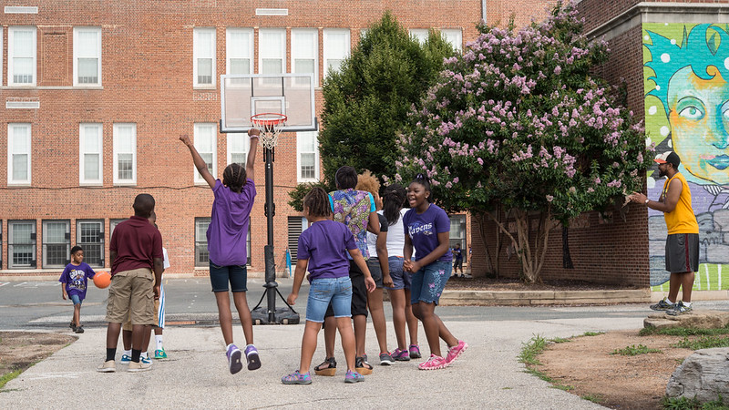

Baltimore City Schools are the 7th most common area where crimes are committed
School Resource Officers and Police surveillance on school campuses is affecting student behavior.
By Mimi Davis
Baltimore City schools rank seventh among the city’s most common locations for reported crime, according to Baltimore Police Department data, with 2024 being the most violent year for offenses committed on school property.
From 2022 through 2025, 1.7% of all reported crime in Baltimore occurred on school premises. While the percentage is relatively small, it accounts for the 3,776 incidents committed in spaces that are intended to prioritize student safety, encouraging the debate on how safety is defined an enforced in schools.
Crime in Baltimore hit its peak for recent years in 2023, with over 67,000 reported crimes. By 2024 there was a 14.2% decrease in crime frequency.
Dr. Asha Layne, a former Crime Scene Investigator for the Baltimore City Police Department and Professor of Sociology and Anthropology at Morgan State University, said that the political state of the city plays a major role in crime frequency fluctuations.
“Looking at the history of these spaces and what happened politically in these spaces you see visible signs of segregation,” she said. “It goes back to the idea of separating policing from politics.”
It’s not a secret that many Baltimore City schools consist predominately of black students and families and the city of Baltimore has a long history with redlining and segregation.
Downtown Baltimore accounted for 11% of all reported crime committed in the city from 2022 to September 2025, according to police data. The neighborhood was designated as "hazardous" on the 1937 Home Owners' Loan Corporation Map, which was used to restrict black families to specific neighborhoods within the city and limit access to mortgages.
The presence of police in these redlined neighborhoods has had a long-standing impact on schools, Layne said.
“Cities that were historically redlined were the ones that were overly surveilled and over-policed,” Layne said. “But there was no money being put into these spaces to alleviate the problems that poverty brings.”
Crime in Schools
The more than 14% decrease in crime for Baltimore from 2023 to 2024 did not reflect in school crime. In fact, there was 4% increase in the number of crimes committed on school premises between those same years.
Non-violent crimes like vandalism and theft occurred frequently on school campuses however, common assault is the most reported crime.
According to data from the Baltimore Police Department, common assault accounted for 16% of all crimes reported on school property during that period and made up 40% of school-based crimes reported in 2024 alone. Maryland law defines common assault as causing intentional harm to another person, which in this case often refers to students hurting eachother.
The prevalence of assault on school campuses raises questions about how young people are exposed to violence and authority at an early age.
“The child going to school will see that school police or Baltimore Police Department vehicle on the premise of their schools, so they are being indoctrinated to accept it,” Layne said.
Baltimore had long been viewed nationally as a symbol of crime, Layne said, but recent political movements like Black Lives Matter, pushed for policy changes and renewed policing practices that are working to alter that narrative.
The fluctuations in crime trends coincides with the policy changes in local and federal leadership, she said, though those shifts do not eliminate the long-term effects of segregation, poverty, and little investment in Baltimore’s youth.

Source: U.S. Department of Agriculture, Flickr
Researchers have found that schools with a heavier police presence, whether through Student resource officers or Police department vehicles, are more likely to rely on punishments. Students are more likely to receive suspensions, be referred to law enforcement or removed from the classroom.
The research also shows that Black and Hispanic students are disproportionately affected by those disciplinary practices, increasing their risk of academic disruption and dropping out.
Layne said law enforcement is often assigned to school campuses to prevent vandalism, manage student behavior during transportation and stop minor issues from escalating into serious incidents. She said, however, that police presence is not the only way to address student behavior.
“When you look at internal policies like suspensions and punishments, that can lead to dropout rates, attrition and students not coming to class,” she said. “That can get them into the school-to-prison pipeline faster.”
Numbers fall, but the debate continues
As of Sept. 29, 2025, 740 crimes were reported as being committed on school premises. At this rate, it is likely 2025 will have roughly a 10% decrease in the number of crimes committed on school grounds.
Layne said Baltimore has made progress by investing in alternative forms of punishment and violence prevention initiatives, but she still emphasized how the issue of school and youth crime is not an issue that school administration can solve alone.
“It starts at home,” Layne said. “Before a child leaves for school, it starts at home. Schools shouldn’t be the only place where kids get food, support or structure.”
As Baltimore moves forward, the data suggests that police surveillance and presence may not be the solution to curbing crime in schools. For students that interact and see patrol cars and police officers every day, redefining school safety could mean investing less in punishment and more in prevention.